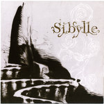

Home Artist links Label link

Martin Maheux Circle - Sybille
| Artist: | Martin Maheux Circle |
| Title: | Sybille |
| Label: | Unicorn UNCR-5026 |
| Length(s): | 58 minutes |
| Year(s) of release: | 2006 |
| Month of review: | [12/2006] |
Line up
Martin Maheux - drums
Martino Gaumond - violin
Sarah Ouellet - alt violin
Catherine Lesailnier - violincello
Jeremie Cloutier - violincello
Frederic Grenier - contrabass
Ivanoe Jolicoeur - trumpet, flugelhorn
Eric St-Jean - piano
Tracks
| 2) | Mauvais Cirque | 5.07
|
| 3) | Aller Simple | 15.02
|
| 4) | Metamorphose | 13.19
|
| 6) | Resignation | 8.05
|
Summary
The music
Teriversation opens with trumpet melody, very ECM type mood, directly reminding of Michael Mantler. Before the halfway mark of the track we suddenly switch to highly traditional solo based jazz, initially with piano which returns later on, the latter fully un-ECM. Mauvais Cirque has a slow pizzicato melody, before turning into something that is more a violin chamber orchestra type melody. A style that will return on a regular basis too.
The jazzy sound is continued into Aller Simple, but Metamorphose returns to a more tranquil and mood-bound sound. Trumpet initially, but assorted strings as well. And yet again: after a couple of minutes the piano player goes haywire, dragging the whole into another dwiddly jazz form. Can't somebody tie this dude down? This time, at least, they get him under again before the track runs out, but the lack of balance between solo jazz stuff and tranquility remains, each having prolonged sections.
La Danse Des Cadavres finally is a track that sticks to the moody style, illustrating a weakness of this style in the process: the track is so sombre and self similar, that its full length is just a bit too much to take. This is easily solved in Resignation, which opens moodily once again, but soon switches to a softer traditional jazz style, featuring trumpet, sounding more like Miles Davis. But before we reach the end piano man has his final stand.
Conclusion
Okay, the moody sections of this album are so moody and sombre that they need some sort of aleviation. However, I don't feel that suddenly jumping across into a traditional jazz style is the appropriate way to bring such. Instead of a blend of styles we are seemingly left with pieces stuck together just a little too haphazardly. This results in an album that does not sound whole to me, despite having some strong points.
© Roberto Lambooy